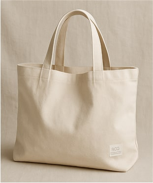
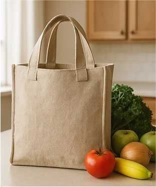
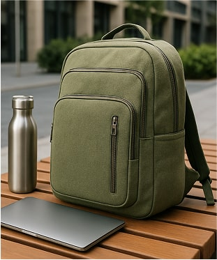
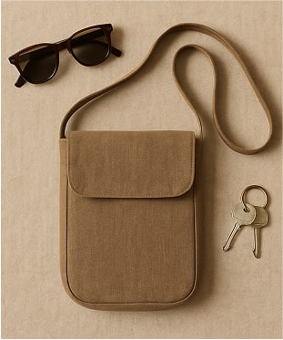
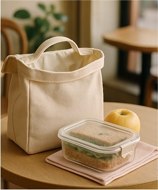
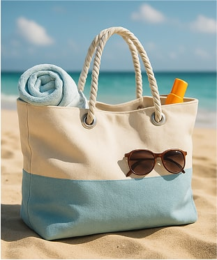
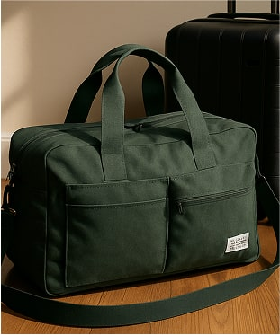
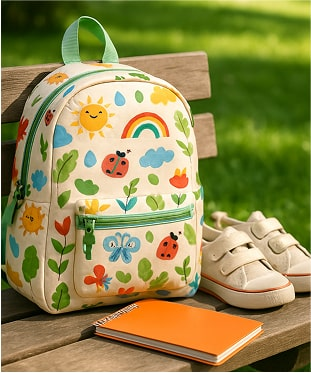

<section class="assortment">
  <div class="container">
    <h2 class="ass-title" id="assortment">Наші сумки</h2>
    <ul>
      <li>
        
        <h3>EcoBag Classic</h3>
        <p>Елегантна та містка сумка для щоденного використання.</p>
        <p>$25</p>
        <button type="button">Купити</button>
      </li>
      <li>
        
        <h3>EcoTote Shopper</h3>
        <p>Ідеальна для покупок, з посиленими ручками.</p>
        <p>$30</p>
        <button type="button">Купити</button>
      </li>
      <li>
        
        <h3>EcoBackpack Urban</h3>
        <p>Зручний рюкзак для міста з відділенням для ноутбука.</p>
        <p>$45</p>
        <button type="button">Купити</button>
      </li>
      <li>
        
        <h3>EcoCrossbody Mini</h3>
        <p>Компактна сумка через плече для найнеобхіднішого.</p>
        <p>$20</p>
        <button type="button">Купити</button>
      </li>
      <li>
        
        <h3>EcoLunch Bag</h3>
        <p>Стильна та практична сумка для обідів.</p>
        <p>$15</p>
        <button type="button">Купити</button>
      </li>
      <li>
        
        <h3>EcoBeach Tote</h3>
        <p>Велика сумка для пляжних речей з водонепроникною підкладкою.</p>
        <p>$35</p>
        <button type="button">Купити</button>
      </li>
      <li>
        
        <h3>EcoTravel Duffle</h3>
        <p>Містка дорожня сумка з додатковими кишенями.</p>
        <p>$60</p>
        <button type="button">Купити</button>
      </li>
      <li>
        
        <h3>EcoKids Bag</h3>
        <p>Яскрава та зручна сумка для дітей.</p>
        <p>$22</p>
        <button type="button">Купити</button>
      </li>
    </ul>
  </div>
</section>
